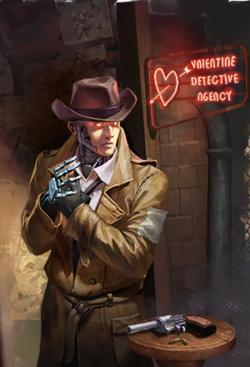

An unusual robotic detective, Nick Valentine is the sole detective of a small agency he runs in Diamond City alongside his assistant Ellie Perkins. In addition to possessing the memories of a late pre-War detective, Nick has certain abilities that complement his investigative skills: he is very effective at hacking computers, and adept at both ranged and melee combat. Valentine believes himself to be a prototype between second-generation synths and the latest, which might explain why he exhibits sapient intelligence and is not innately hostile towards non-Institute humans. He is generally well respected throughout Diamond City despite his mysterious origins.
Originally, along with another synth named DiMA, the synth that would become Nick Valentine was one of two unique prototype Gen 2 synths used to test if and how synths could handle independent thinking. For years he was experimented on, having various personalities and memories from former humans loaded into him. Despite this, he and DiMA grew a family-like bond to one another, due to being the first and only synths of their kind. This was until DiMA, having been an experiment on a synth developing its own sense of consciousness and self without preloaded personalities or memories, grew to resent the experiments being performed on him and his "brother." The two synths managed to escape, but not before the Institute uploaded a new personality and memories in DiMA's brother.The synth, now identifying himself as a pre-War police officer named Nick Valentine, in a state of confusion due to suddenly "waking up" 200 years in the future, attacked DiMA, who was left with no choice but to knock Nick out and leave him behind. After regaining consciousness in a pile of garbage an unknown amount of time later, Nick wandered the wasteland in a state of confusion for several weeks.